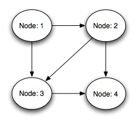

This document introduce you with internal scheme used by XMLCoDe to serialize and deserialize graph structures, by maintaining reference identifiers.
Suppose that you want to code a graph structure (this is generally the case when trying to serialize some Java objects). Without reference maintaining, you need to extract from object-graph a tree that you will serialize as XML document. This is generally painfull, require a pre-processing, and lead to maintainance problems, as well as programming issues. When you need to deserialize again, you also have to rebuild all your lost references, which may lead to other maintainance and programming issues.
XMLCoDe can provide for you an efficient way to maintain references in an object graph, and thus coding what ever java model object you want without pre-processing.
Suppose that you want to code this graph structure.
Above model could be coded in Java like this:
public class Graph implements XMLSerializable
{
public Node startNode;
}
public class Node implements XMLSerializable
{
public Vector edges;
}
public class Edge implements XMLSerializable
{
public Node originNode;
public Node destinationNode;
}
Following mapping may maintain XML persistance for this object model:
<?xml version="1.0" encoding="UTF-8"?>
<model handlesReferences="yes">
<entity name="fr.enstb.xmlcode.examples.example4.Graph" xmlTag="Graph">
<property name="startNode" xmlTag="StartNode"/>
</entity>
<entity name="fr.enstb.xmlcode.examples.example4.Node" xmlTag="Node,StartNode,OriginNode,DestinationNode">
<property name="edges" xmlTag="Edge" type="vector"/>
</entity>
<entity name="fr.enstb.xmlcode.examples.example4.Edge" xmlTag="Edge">
<property name="originNode" xmlTag="OriginNode"/>
<property name="destinationNode" xmlTag="DestinationNode"/>
</entity>
</model>
Maintaining automatic object references is as simpler as to define this attribute handlesReferences="yes" in model entity. Knowing this, XMLCoDe will not try to deeply serialize (which will fail here in an infinite loop), but will maintain references. Note that default behaviour is handlesReferences="no".
Note that this example shows that some objects may be serialized/deserialized in different contexts. Node entity
Graph: start node is Node1 Node: 1 with edges [ Edge: Node: 1-Node: 2 ] [ Edge: Node: 1-Node: 3 ] Node: 2 with edges [ Edge: Node: 2-Node: 3 ] [ Edge: Node: 2-Node: 4 ] Node: 3 with edges [ Edge: Node: 3-Node: 4 ] Node: 4 with edges
This graph is also represented on following figure:
This graph will be serialized like this:
<Graph id="1">
<StartNode id="2">
<Edge id="3">
<OriginNode idref="2" />
<DestinationNode id="4">
<Edge id="5">
<OriginNode idref="4" />
<DestinationNode id="6">
<Edge id="7">
<OriginNode idref="6" />
<DestinationNode id="8">
<nodeProperties />
</DestinationNode>
</Edge>
<nodeProperties />
</DestinationNode>
</Edge>
<Edge id="9">
<OriginNode idref="4" />
<DestinationNode idref="8" />
</Edge>
<nodeProperties />
</DestinationNode>
</Edge>
<Edge id="10">
<OriginNode idref="2" />
<DestinationNode idref="6" />
</Edge>
<nodeProperties />
</StartNode>
</Graph>
NB1: This example is extracted from example4 delivered in source distribution
NB2: We see here that Node concept is mapped by many XML tags relating to context. Those issues and some more complex concepts are explained in Advanced XML mapping definitions: contextual XML Tags where this discussion continue.
NB3: Note that if this result is correct, this is not really human-understandable. See Structured serialization: how to make your serialized stucture stable ?